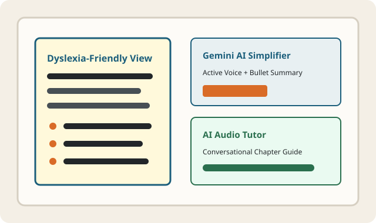

Inclusive University Learning for Students with Dyslexia
Dyslexia affects reading fluency and decoding speed, but never a student's intelligence or critical thinking. LexiLearn removes unnecessary cognitive barriers in higher education by transforming dense academic readings into structured, dyslexia-friendly summaries and conversational audio walkthroughs.
Explore our evidence-based literacy tools built around the research of the International Dyslexia Association (IDA).

Core Dyslexia Support Features
LexiLearn combines four interconnected learning supports designed to reduce visual stress, decoding fatigue, and working-memory overload across university courses:
AI Text Simplification
Powered by Google Gemini (`gemini-2.5-flash`), this feature converts multi-clause passive academic paragraphs into direct active-voice sentences, scannable bullet points, and inline key-term glossaries.
AI Audio Explanations
Moves beyond robotic text-to-speech by providing warm, conversational audio walkthroughs that explain complex textbook diagrams, timelines, and scientific formulas step by step.
Visual Reading Tools
Customizable background paper tints (cream, soft yellow, sky blue, mint sage), generous letter spacing, 60–72 character column widths, and single-line reading focus rulers.
Adapted Study Library (CRUD)
Create, edit, search, filter, and manage university study modules across Biology, Computer Science, History, and Economics with persistent LocalStorage support.
Why Accessible Course Design Matters in Higher Education
Addressing Visual Crowding & Working Memory Overload
When university readings are presented as justified walls of pure black text on stark white backgrounds, learners with dyslexia often experience visual distortion, letter reversal, and rapid eye fatigue. By combining human-centered typography with AI-assisted structural chunking, students spend less energy decoding words and more energy mastering university-level concepts.
- Zero Harsh Contrast: Soft cream (`#FDFBF7`) and charcoal (`#222629`) eliminate screen glare while maintaining WCAG AAA contrast ratios.
- Predictable Scannable Hierarchy: Every chapter begins with key takeaways and defined terminology before diving into detailed paragraphs.
- Multimodal Reinforcement: Pairing simplified written points with spoken explanations strengthens long-term retention.

Request Course Material Adaptation or Share Feedback
Are you a student, accessibility coordinator, or instructor who wants a university textbook chapter adapted into LexiLearn format? Fill out the accessible form below: